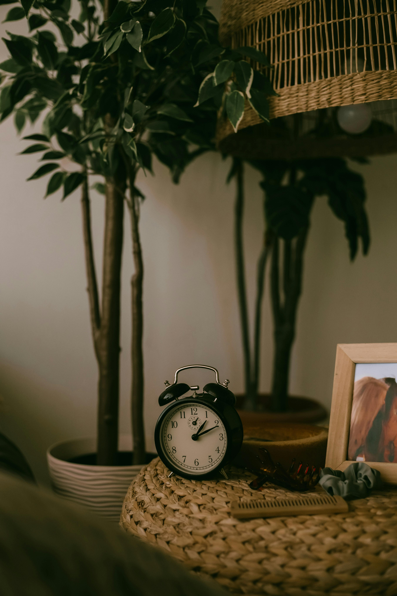
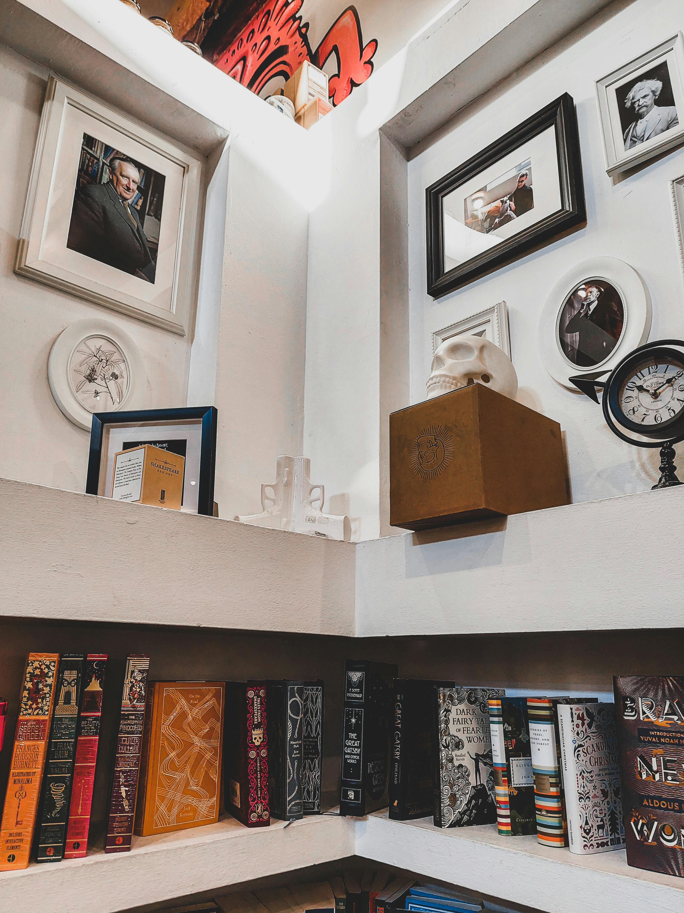

{% extends 'base.html' %}
{% block start %}
{% load static %}
Welcome to Goal Tracker!
Organize your tasks, manage your time, and boost your productivity

Don't forget to
-
Track your progress over time and see how close you are to
completing your goals.
-
Set short-term and long-term goals to help you stay focused.
Set reminders for important deadlines.
-
Limit distractions to maximize productivity during task
completion.
-
Stay consistent with daily habits that contribute to your goals..
-
Celebrate small wins to keep yourself motivated along the journey.
-
Avoid multitasking—focus on completing one task at a time for better results.
-
Track your progress visually using charts or progress bars to see how far you've come.

{% endblock %}